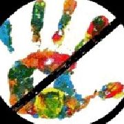

Web Development Specialist Currently versed in HTML5, CSS3,and Bootstrap. Some Ruby...Currently enrolled at the Firehose Project, Free Code Camp. Click on the potfolio icon to access pages I have designed.
Social Media Webmaster
Links are Life. Here are links to the Facebook accounts I created and still moniter. One is for a local small business that has gained over 100 customers through facebook. The other is for my PAC for abused women.
>
OUTPAW, or Ohioans United To Protects Abused Women was founded in 2011 to help abused women get the help they need. Inspired by an increase in domestic violence in my neighborhood,our peak event was a fundraiser garnering the attention of the popular local publication doppleganger of the Villiage Voice Cincinnati's City Beat.